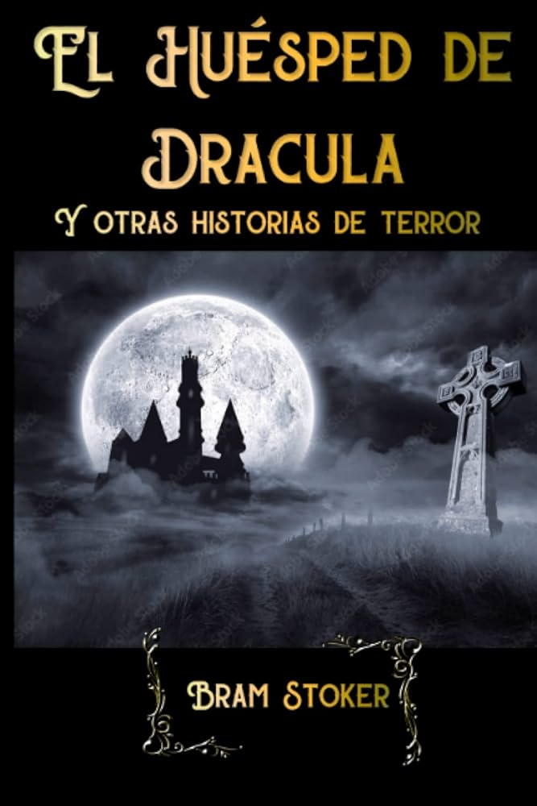

"Es una recopilación de nueve cuentos escritos por Bram Stoker, publicados de manera póstuma en 1914. Esta obra ofrece una mirada más profunda al estilo gótico y de terror que caracterizó al autor, extendiendo su legado más allá de la icónica novela Drácula. Cada relato presenta diferentes aspectos del miedo, lo sobrenatural y la condición humana, explorando temas como la muerte, la venganza, la traición, la justicia sobrenatural y la lucha entre el bien y el mal. El relato principal, El huésped de Drácula, se considera un capítulo eliminado de Drácula, que introduce una atmósfera oscura y misteriosa en la que un joven inglés enfrenta fuerzas desconocidas en un cementerio alemán durante la noche de Walpurgis. Esta historia establece el tono para el resto de la colección, que incluye relatos variados, desde casas embrujadas y fantasmas, hasta venganzas terribles y profecías trágicas. A lo largo de los cuentos, Stoker combina la tensión psicológica con elementos fantásticos y sobrenaturales, logrando que el lector experimente el miedo tanto a través de lo visible como de lo insinuado. La colección no solo se limita al horror sobrenatural, sino que también aborda el terror real de la condición humana, como la crueldad, la codicia y la desesperación. Los relatos presentan personajes atrapados en situaciones donde el destino y fuerzas más allá de su control dictan su final, reflejando el fatalismo característico del género gótico. Además, Stoker emplea una narrativa que mezcla el suspense, la intriga y el misterio, manteniendo al lector en constante tensión. En resumen, "El huésped de Drácula y otros relatos" es una obra que amplía el universo literario de Bram Stoker, explorando el terror desde diferentes perspectivas y dejando una huella imborrable en la literatura gótica y de horror. Es una lectura imprescindible para quienes disfrutan de historias que combinan lo macabro con lo sobrenatural, y que examinan las profundidades más oscuras del alma humana.
